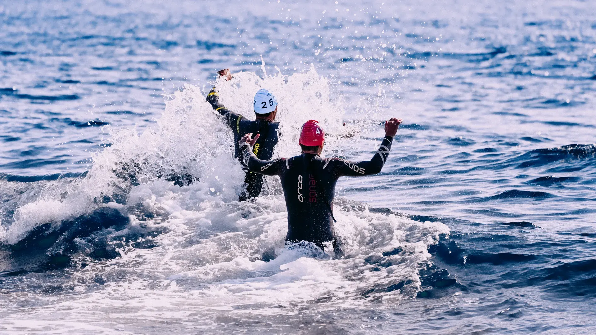
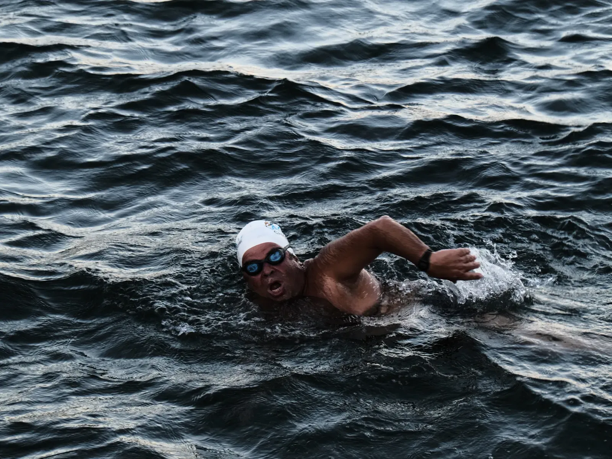
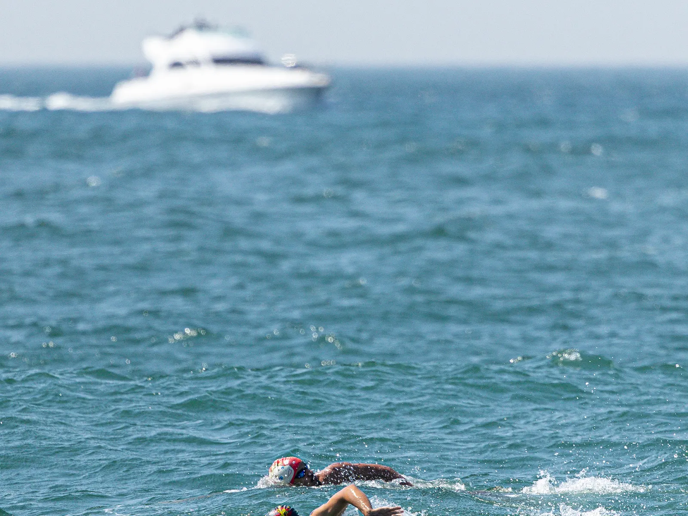
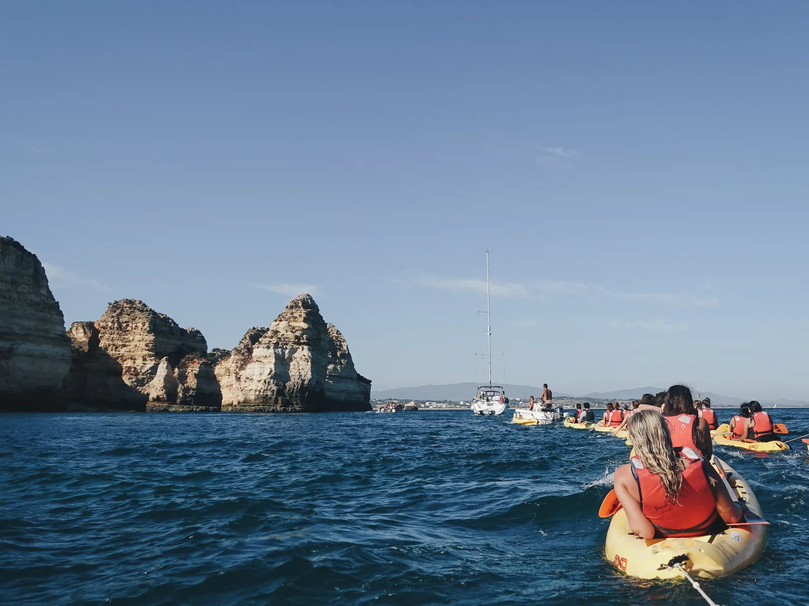
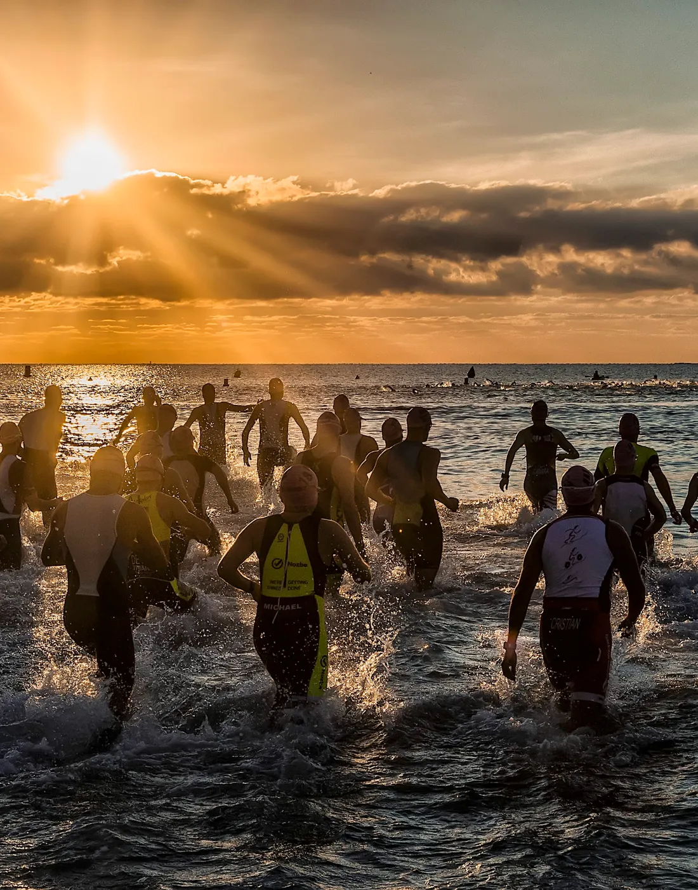
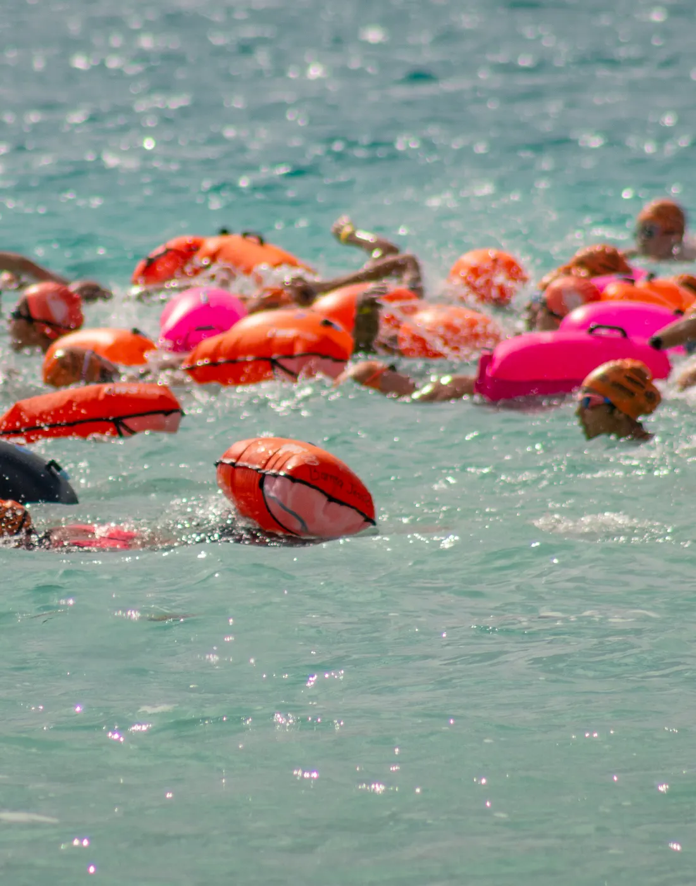
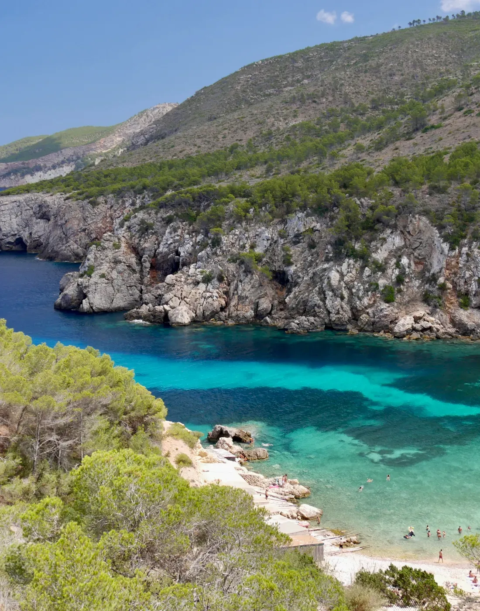
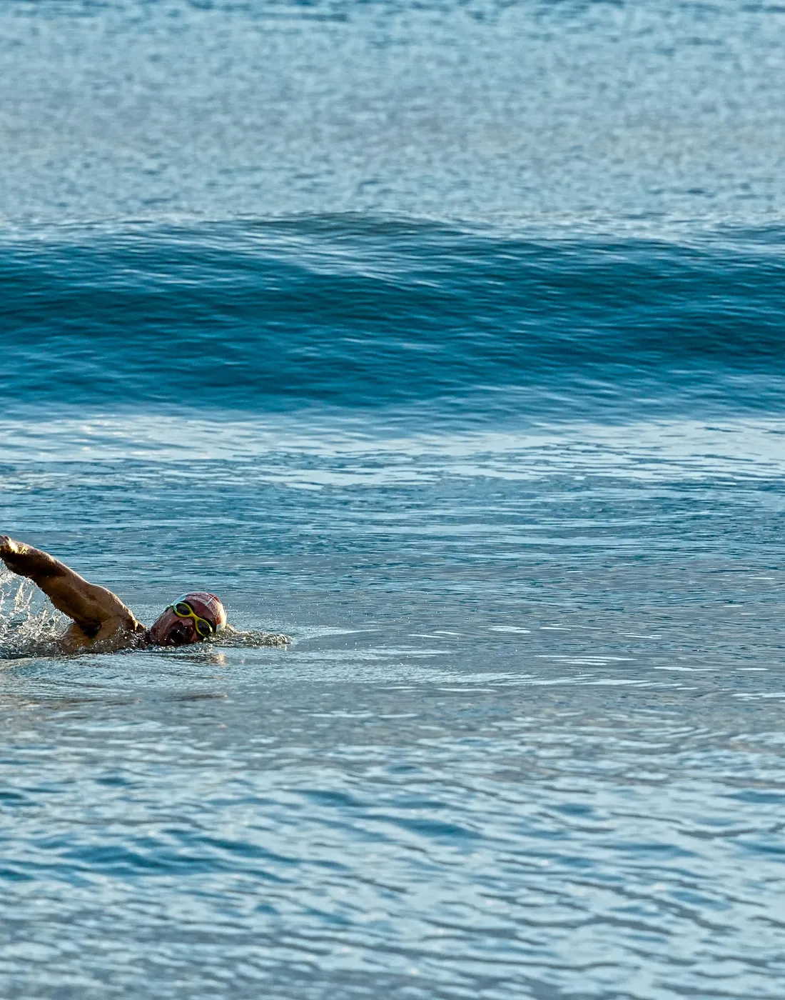
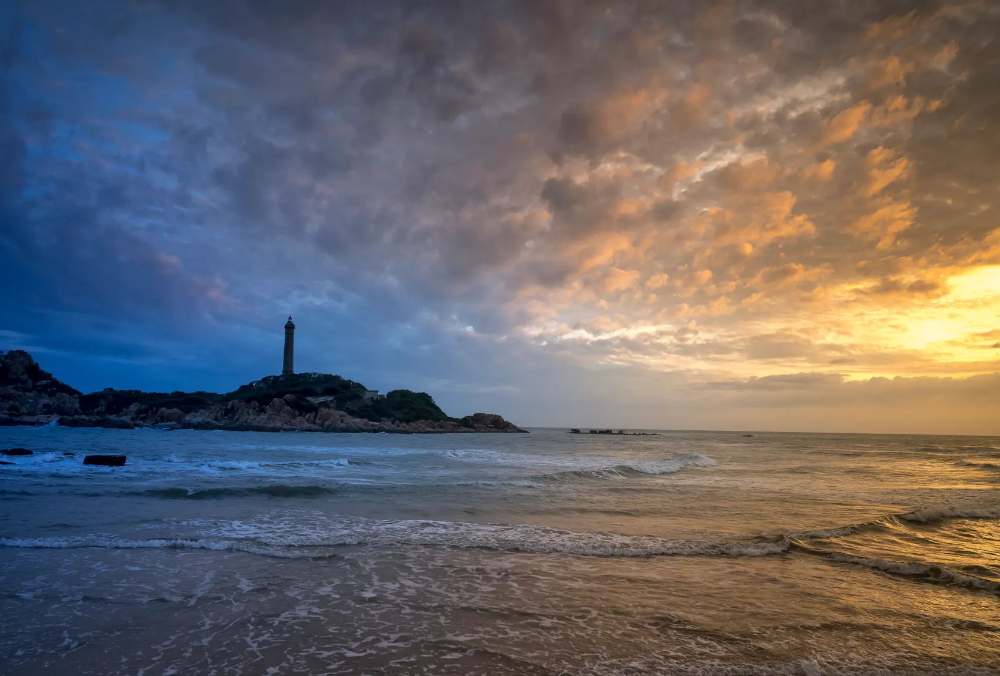
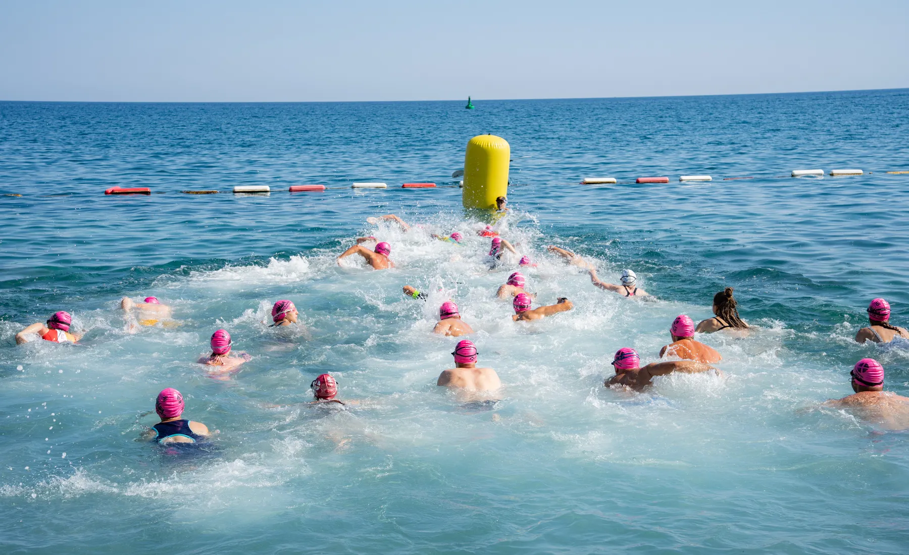

Clínica de Mar · Claromecó & el mundo
Nadá en aguas abiertas con quien sabe leer el mar
Clínicas y travesías guiadas desde 2011. Teoría antes de entrar, apoyo náutico adentro del agua.

El mar, primero se lee
El mar no te exige ser el más rápido. Te exige estar preparado.
Por eso cada travesía empieza afuera del agua: marea, corriente, canal y orientación. Cuando entrás, ya sabés lo que estás leyendo.

01 — Quiénes somos
De la pileta a las aguas abiertas
Clínica de Mar nació en 2011 para que nadar en el mar dejara de ser un salto al vacío. Desde entonces acompañamos a cientos de nadadores en su primer cruce y en todos los que vinieron después.
Acá no hay carril, ni pared, ni reloj. Hay marea, corriente y un rumbo que hay que elegir. Todo eso se aprende, y se aprende con alguien al lado.
- Teoría y práctica en cada propuesta, no solo el nado.
- Equipo propio coordinando en tierra y en el agua.
- Aprendizaje, turismo y aventura en el mismo viaje.
02 — El método
Así se prepara una travesía
Cinco pasos que hacemos antes y durante cada cruce. Scrolleá y la carta se dibuja sola.
-
01
La charla
Antes del agua: cómo funciona la marea del día, a qué hora conviene entrar y qué esperar del oleaje.
-
02
Corrientes y canal
Dónde empuja el agua y dónde arrastra. Por qué el camino más corto casi nunca es la línea recta.
-
03
El rumbo
Orientación y navegación: elegir una referencia en tierra y sostenerla sin levantar la cabeza cada cinco brazadas.
-
04
El apoyo
Guardavidas, embarcación de apoyo, lancha y kayaks acompañando todo el cruce. Nadie queda solo en el agua.
-
05
El cruce
Ahora sí. Entrás sabiendo qué estás leyendo, y la travesía deja de ser un riesgo para ser una experiencia.
03 — Qué incluye
Todo resuelto, adentro y afuera del agua
-
01
Hotelería de calidad
Alojamiento seleccionado en cada destino, elegido para descansar bien entre nado y nado.
-
02
Comidas resueltas
Régimen de pensión completa o media pensión, según el destino. No tenés que pensar en la comida.
-
03
Traslados incluidos
Movilidad incluida durante toda la actividad, del alojamiento al agua y de vuelta.
-
04
Acompañamiento permanente
Nuestro equipo coordina la propuesta de punta a punta, en tierra y en el agua.
-
05
Seguridad náutica total
Guardavidas, coordinación profesional, embarcación de apoyo, lancha y kayaks en cada cruce.
-
06
Turismo y cultura
Excursiones incluidas a lugares turísticos y culturales: el destino también se conoce fuera del agua.


04 — Calendario
Travesías 2026 · 2027
Diez fechas confirmadas. Arrastrá la carta para recorrerlas y consultá la que te interese.
-
01 / 10
Alicante
España
14 al 21 de septiembre 2026
Travesía internacional Consultar -
02 / 10
Claromecó
Fecha NAF · Argentina
10 y 11 de octubre 2026
Inscripción abierta Inscribirme -
03 / 10
Angra dos Reis
Brasil
20 al 26 de octubre 2026
Travesía internacional Consultar -
04 / 10
Angra dos Reis
Brasil
2 al 8 de noviembre 2026
Travesía internacional Consultar -
05 / 10
Claromecó
Clínica de Mar · Argentina
13 y 14 de marzo 2027
La clínica de casa Consultar -
06 / 10
San Andrés
Colombia
12 al 18 de abril 2027
Travesía internacional Consultar -
07 / 10
Angra dos Reis
Brasil
24 al 30 de abril 2027
Travesía internacional Consultar -
08 / 10
Riviera Maya y Bacalar
México
8 al 16 de mayo 2027
Travesía internacional Consultar -
09 / 10
Tailandia
Sudeste asiático
Junio de 2027
Fecha a confirmar Consultar -
10 / 10
Ibiza
España
Octubre de 2027
Fecha a confirmar Consultar
Los mares donde nadamos




05 — La casa
Claromecó, donde empezó todo
El faro, la playa larga y el mar que nos enseñó a leer. Todos los años volvemos al lugar donde nació la Clínica, y ahí es donde más gente cruza por primera vez.
- 10 y 11 oct 2026 Fecha NAF en Claromecó Inscribirme
- 13 y 14 mar 2027 Clínica de Mar Claromecó Consultar


06 — Experiencias
No lo decimos nosotros
Lo dicen quienes ya cruzaron con nosotros.
“Nadaba en pileta hace quince años y el mar me daba pánico. La charla previa me cambió la cabeza: entendí la corriente y crucé sin drama.”
“Lo que más valoro es el apoyo náutico. En todo el cruce tuve un kayak a veinte metros. Nadás tranquilo y disfrutás el paisaje.”
“Fui sola y volví con un grupo. Es un viaje: nadás a la mañana, conocés el lugar a la tarde y comés con gente que ama lo mismo que vos.”
Antes de escribirnos
Si tu pregunta no está acá, escribinos y te la respondemos en el día.
¿Tengo que ser nadador experto para sumarme?
No. Las clínicas están pensadas para nadadores de pileta que quieren dar el paso al mar. Cada propuesta arranca con teoría afuera del agua y sigue con práctica acompañada.
¿Cómo es la seguridad en el agua?
Cada cruce se hace con guardavidas, coordinación profesional, embarcación de apoyo, lancha y kayaks acompañando a los nadadores.
¿Qué incluye una travesía internacional?
Hotelería seleccionada, pensión completa o media pensión según el destino, traslados durante toda la actividad, acompañamiento permanente del equipo, seguridad náutica y excursiones turísticas y culturales.
¿Dónde nadan además de Claromecó?
En Alicante e Ibiza (España), Angra dos Reis (Brasil), San Andrés (Colombia), Riviera Maya y Bacalar (México) y Tailandia, entre 2026 y 2027. Escribinos y te contamos cuál es la mejor primera travesía para vos.
07 — Contacto
Hablemos de tu próxima travesía
Escribinos por WhatsApp y te respondemos con las fechas, los cupos y todo lo que incluye cada destino.
El mar te está esperando. Entrá preparado.
Contanos qué nadás hoy y te decimos cuál es tu primera travesía. Respondemos por WhatsApp.